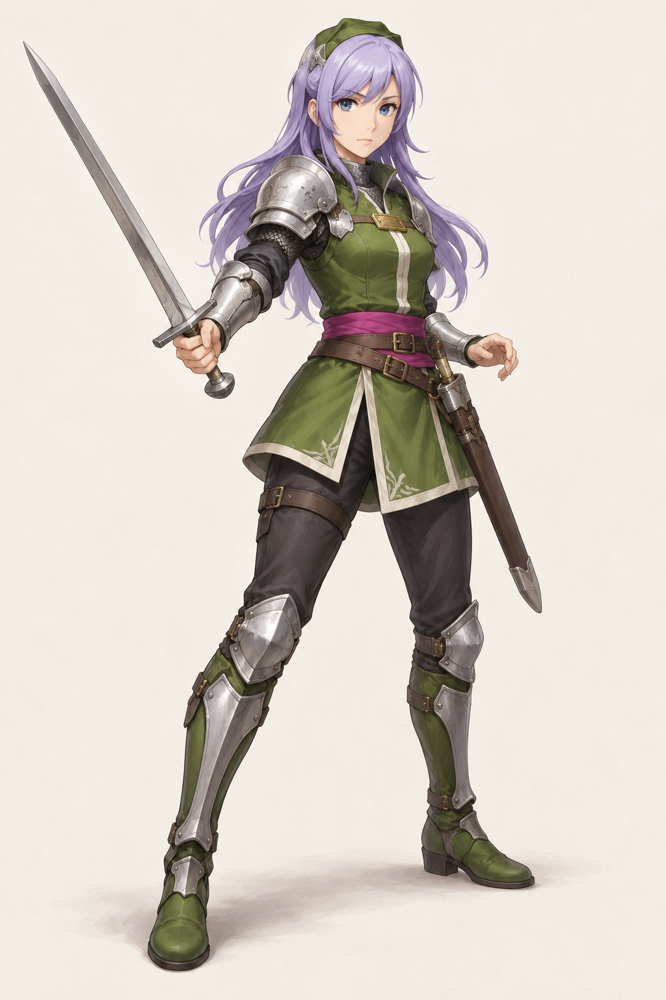
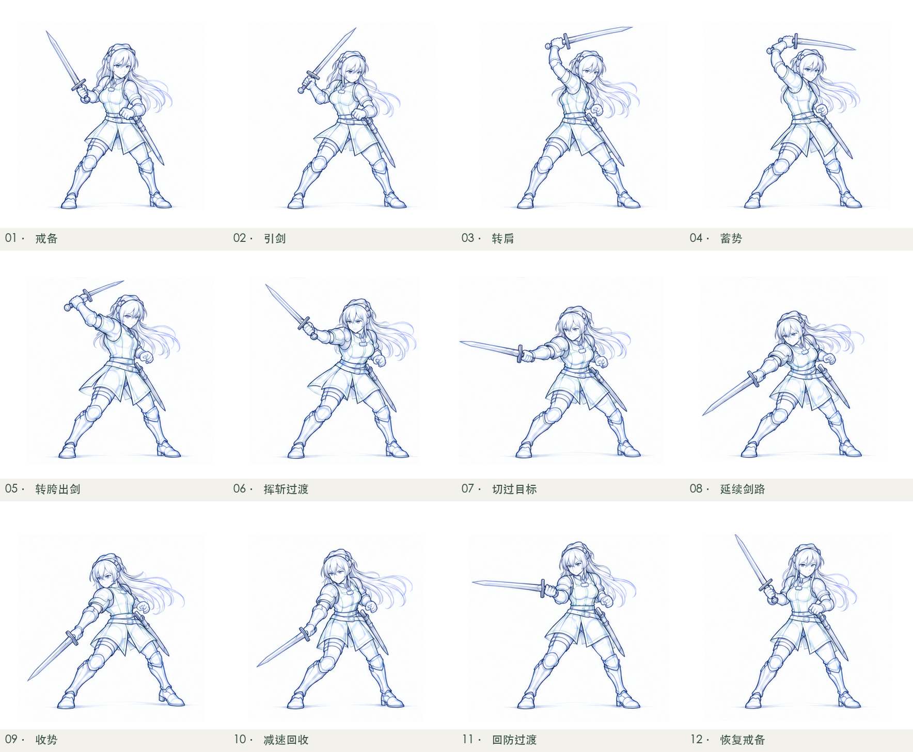

查看其他 2D 全身攻击素材
先看同一角色的高清造型，再看一条完整斜斩的动作草稿。战斗身体与 Q 版跑图仍是两套比例。

保留紫发、绿色主衣与头饰、金胸扣、粉腰带；新增团服裁片、轻型护具和承担剑鞘的武装带。完整战斗身体与护具属于重制设计。
12 张顺序绘制草稿：戒备 → 引剑与转肩 → 挥斩 → 收势 → 回防。预览不使用光流、交叉淡入淡出或剑光特效。末尾多停留 0.4 秒便于看回防。

此页用于看造型与动作，不代表已认可或接入正式游戏；Q 版跑图和七贝本轮沿用现有素材。